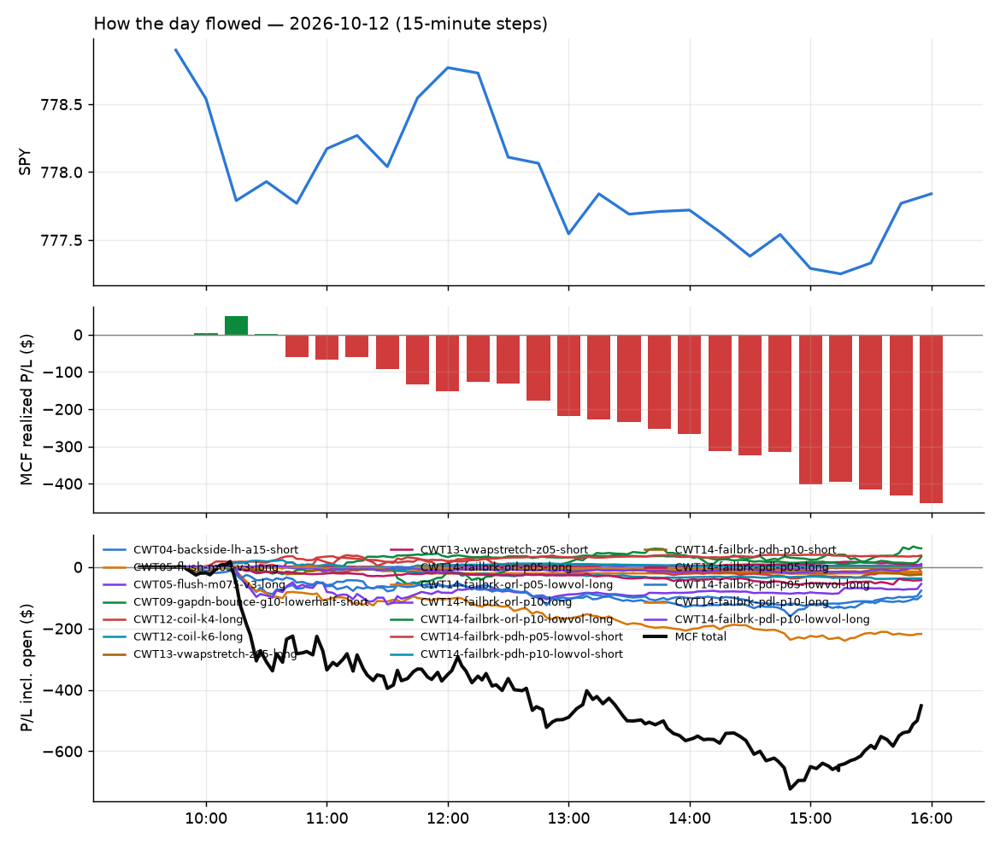

315 trades · win rate 56% · P/L $-451.98
PROBATION: no live setup has passed both locked test periods. 10 owner-directed setups added 2026-10-08 (MarcoFlow top 5 + 5 new), untested live. RW6G1 (RW6 + VWAP band guard) added 2026-10-09, probation.

| Symbol | Setup | Side | In | Out | Entry | Exit | Exit reason | % lost | P/L |
|---|---|---|---|---|---|---|---|---|---|
| AXTI | CWT14-failbrk-orl-p05-long | long | 11:36 | 13:37 | 64.16 | 62.35 | stop | -2.82% | $-25.34 |
| TEM | CWT14-failbrk-pdl-p05-lowvol-long | long | 09:56 | 11:10 | 69.99 | 68.20 | stop | -2.56% | $-23.27 |
| WOLF | CWT14-failbrk-orl-p05-lowvol-long | long | 10:16 | 11:16 | 27.90 | 27.23 | stop | -2.40% | $-22.78 |
| AXTI | CWT12-coil-k4-long | long | 10:35 | 11:24 | 65.34 | 63.78 | stop | -2.39% | $-21.88 |
| BE | CWT14-failbrk-orl-p05-long | long | 10:15 | 10:44 | 267.20 | 261.11 | stop | -2.28% | $-18.27 |
| CBRS | CWT05-flush-m05-v3-long | long | 10:36 | 11:50 | 151.53 | 148.08 | stop | -2.28% | $-20.70 |
| PURR | CWT14-failbrk-pdl-p05-long | long | 09:56 | 10:17 | 11.14 | 10.93 | stop | -1.88% | $-17.76 |
| INFQ | CWT14-failbrk-orl-p10-long | long | 10:16 | 10:58 | 10.68 | 10.48 | stop | -1.87% | $-17.80 |
| MRNA | CWT14-failbrk-orl-p10-long | long | 11:51 | 12:42 | 218.54 | 214.55 | stop | -1.83% | $-15.96 |
| RDW | CWT14-failbrk-pdl-p05-lowvol-long | long | 12:22 | 14:55 | 9.41 | 9.24 | stop | -1.81% | $-17.00 |
Signal to fill: median 2s, 90th percentile 3s (315 trades). Bars close each minute; the order follows the bar close.
Best excursion (MFE): median 0.37R; worst (MAE) median 0.65R. 37% of trades never got +0.25R in our favour; 0 reached +1R and still closed at or below 0.
| Symbol | Setup | Best R | Worst R | Closed R |
|---|---|---|---|---|
| LABD | CWT12-coil-k6-long | +0.59 | -1.19 | -1.54 |
| TLN | CWT14-failbrk-orl-p05-long | +0.76 | -1.10 | -1.16 |
| DT | CWT12-coil-k6-long | +0.60 | -1.05 | -1.10 |
| DOC | CWT12-coil-k6-long | +0.60 | -2.15 | -0.95 |
| CDE | CWT12-coil-k4-long | +0.53 | -1.01 | -1.01 |
| Entry time | Trades | Win | Avg R | P/L |
|---|---|---|---|---|
| 09:50-10:30 | 127 | 60% | -0.11 | $-207.14 |
| 10:30-11:30 | 112 | 62% | -0.06 | $-123.86 |
| 11:30-13:00 | 42 | 38% | -0.35 | $-60.03 |
| 13:00-14:00 | 23 | 39% | -0.21 | $-55.84 |
| 14:00-16:00 | 11 | 55% | -0.06 | $-5.11 |
| Setup | Trades | Win | Avg R | Adj R (net of SPY) | P/L |
|---|---|---|---|---|---|
| Backside Lower-High Short (CWT04-backside-lh-a15-short) | 1.0 | 100% | +0.64 | +0.68 | $4.48 |
| Panic Flush Reversal (3x volume) (CWT05-flush-m05-v3-long) | 1.0 | 0% | -1.00 | -1.07 | $-20.70 |
| Gap-Down Bounce Rejection Short (10% gap) (CWT09-gapdn-bounce-g10-lowerhalf-short) | 1.0 | 100% | +0.28 | +0.28 | $60.79 |
| Coil Under the High (4 bars) (CWT12-coil-k4-long) | 39.0 | 67% | -0.03 | -0.08 | $-16.86 |
| Coil Under the High (6 bars) (CWT12-coil-k6-long) | 10.0 | 10% | -0.76 | -0.87 | $-37.27 |
| Stretched Below VWAP Bounce (CWT13-vwapstretch-z05-long) | 4.0 | 25% | -0.59 | -0.64 | $-24.69 |
| Stretched Above VWAP Fade (CWT13-vwapstretch-z05-short) | 5.0 | 60% | +0.14 | +0.13 | $5.57 |
| Failed Opening-Range-Low Break Long (0.05 ATR) [fill] (CWT14-failbrk-orl-p05-long) | 38.0 | 53% | -0.12 | -0.12 | $-76.60 |
| Failed Opening-Range-Low Break Long (0.05 ATR, low volume) [fill] (CWT14-failbrk-orl-p05-lowvol-long) | 48.0 | 33% | -0.47 | -0.46 | $-217.82 |
| Failed Opening-Range-Low Break Long (0.1 ATR) [fill] (CWT14-failbrk-orl-p10-long) | 16.0 | 56% | -0.11 | -0.18 | $-55.09 |
| Failed Opening-Range-Low Break Long (low volume) (CWT14-failbrk-orl-p10-lowvol-long) | 32.0 | 75% | +0.13 | +0.08 | $33.62 |
| Failed Prior-Day-High Break Short (0.05 ATR, low volume) [fill] (CWT14-failbrk-pdh-p05-lowvol-short) | 23.0 | 78% | +0.16 | +0.13 | $37.78 |
| Failed Prior-Day-High Break Short (low volume) (CWT14-failbrk-pdh-p10-lowvol-short) | 17.0 | 59% | -0.08 | -0.11 | $1.35 |
| Failed Prior-Day-High Break Short (0.1 ATR) [fill] (CWT14-failbrk-pdh-p10-short) | 21.0 | 62% | -0.09 | -0.18 | $-2.72 |
| Failed Prior-Day-Low Break Long (shallow) (CWT14-failbrk-pdl-p05-long) | 14.0 | 50% | -0.14 | -0.10 | $-43.32 |
| Failed Prior-Day-Low Break Long (0.05 ATR, low volume) [fill] (CWT14-failbrk-pdl-p05-lowvol-long) | 26.0 | 50% | -0.25 | -0.25 | $-94.44 |
| Failed Prior-Day-Low Break Long (CWT14-failbrk-pdl-p10-long) | 11.0 | 64% | +0.12 | +0.16 | $-16.01 |
| Failed Prior-Day-Low Break Long (0.1 ATR, low volume) [fill] (CWT14-failbrk-pdl-p10-lowvol-long) | 8.0 | 75% | +0.25 | +0.20 | $9.95 |
Market direction (SPY, beta 1) accounted for $-12.92 of today's $-451.98; the rest ($-439.06) came from the setups themselves. Avg R net of SPY: -0.15 (incl. a hedge leg's cost; report only).
30 setups live today. Today: 887 signals, 360 taken, 350 lost because another setup held the symbol (40%). Since 2026-10-12 (1 sessions): 887 signals, 360 taken, 350 lost to other setups (40%). Peak open positions today 107 of 400 slots. Earnings blackout removed 75 symbols before scanning.
Crowded out: CWT12-coil-k6-long, CWT14-failbrk-pdh-p10-short, CWT14-failbrk-pdl-p10-long, CWT14-failbrk-orl-p10-long, CWT14-failbrk-pdh-p05-lowvol-short, CWT14-failbrk-pdl-p05-lowvol-long, CWT14-failbrk-pdl-p05-long, CWT14-failbrk-orl-p05-lowvol-long, CWT14-failbrk-orl-p05-long
| Prio | Setup | Today sig / taken | Sessions | Signals / taken / trades | Taken/day | Expected/day | Lost to other setups | Lost to (setup n) | Top skip reasons | Verdict |
|---|---|---|---|---|---|---|---|---|---|---|
| 1 | Backside Lower-High Short (big runner) CWT04-backside-lh-a25-short | 0 / 0 | 1 | 0 / 0 / 0 | 0.00 | – | 0 | – | – | quiet - wait no signals in 1 session(s); too early to tell |
| 2 | Backside VWAP-Test Short (big runner) CWT04-backside-vwaptest-a25-short | 0 / 0 | 1 | 0 / 0 / 0 | 0.00 | – | 0 | – | – | quiet - wait no signals in 1 session(s); too early to tell |
| 3 | Gap-Down VWAP Loss Short (10% gap) CWT09-gapdn-vwaploss-g10-short | 2 / 0 | 1 | 2 / 0 / 0 | 0.00 | – | 0 | – | not shortable / shorts off 1, spread / quote / size 1 | slow no entries yet |
| 4 | Panic Flush Reversal (deep, 5x volume) CWT05-flush-m075-v5-long | 0 / 0 | 1 | 0 / 0 / 0 | 0.00 | – | 0 | – | – | quiet - wait no signals in 1 session(s); too early to tell |
| 5 | Gap-Down Bounce Rejection Short (10% gap) CWT09-gapdn-bounce-g10-lowerhalf-short | 2 / 1 | 1 | 2 / 1 / 1 | 1.00 | – | 0 | – | not shortable / shorts off 1 | slow 5.0 entries/week; ~12 weeks to 60 trades |
| 6 | Backside Lower-High Short CWT04-backside-lh-a15-short | 1 / 1 | 1 | 1 / 1 / 1 | 1.00 | – | 0 | – | – | slow 5.0 entries/week; ~12 weeks to 60 trades |
| 7 | Panic Flush Reversal (5x volume) CWT05-flush-m05-v5-long | 1 / 0 | 1 | 1 / 0 / 0 | 0.00 | – | 1 | CWT14-failbrk-orl-p10-long 1 | symbol held by another setup 1 | slow no entries yet |
| 8 | Panic Flush Reversal (deep, 3x volume) CWT05-flush-m075-v3-long | 1 / 1 | 1 | 1 / 1 / 0 | 1.00 | – | 0 | – | – | slow 5.0 entries/week; ~12 weeks to 60 trades |
| 9 | Spike-Pullback Flag Breakout CWT12-flag-s1-long | 0 / 0 | 1 | 0 / 0 / 0 | 0.00 | – | 0 | – | – | quiet - wait no signals in 1 session(s); too early to tell |
| 10 | Backside VWAP-Test Short CWT04-backside-vwaptest-a15-short | 1 / 0 | 1 | 1 / 0 / 0 | 0.00 | – | 0 | – | spread / quote / size 1 | slow no entries yet |
| 11 | Stretched Above VWAP Fade (far) CWT13-vwapstretch-z075-short | 0 / 0 | 1 | 0 / 0 / 0 | 0.00 | – | 0 | – | – | quiet - wait no signals in 1 session(s); too early to tell |
| 12 | Gap-Down VWAP Loss Short (5% gap) CWT09-gapdn-vwaploss-g5-short | 16 / 0 | 1 | 16 / 0 / 0 | 0.00 | – | 0 | – | not shortable / shorts off 15, spread / quote / size 1 | slow no entries yet |
| 13 | Panic Flush Reversal (3x volume) CWT05-flush-m05-v3-long | 3 / 1 | 1 | 3 / 1 / 1 | 1.00 | – | 2 | CWT14-failbrk-orl-p10-long 1, CWT05-flush-m075-v3-long 1 | symbol held by another setup 2 | slow 5.0 entries/week; ~12 weeks to 60 trades |
| 14 | Gap-Down Bounce Rejection Short (5% gap) CWT09-gapdn-bounce-g5-lowerhalf-short | 11 / 0 | 1 | 11 / 0 / 0 | 0.00 | – | 1 | CWT09-gapdn-bounce-g10-lowerhalf-short 1 | not shortable / shorts off 10, symbol held by another setup 1 | slow no entries yet |
| 15 | Stretched Below VWAP Bounce (far) CWT13-vwapstretch-z075-long | 0 / 0 | 1 | 0 / 0 / 0 | 0.00 | – | 0 | – | – | quiet - wait no signals in 1 session(s); too early to tell |
| 16 | Stretched Above VWAP Fade CWT13-vwapstretch-z05-short | 5 / 5 | 1 | 5 / 5 / 5 | 5.00 | – | 0 | – | – | ok 25.0 entries/week |
| 17 | Coil Under the High (6 bars) CWT12-coil-k6-long | 36 / 10 | 1 | 36 / 10 / 10 | 10.00 | – | 19 | CWT12-coil-k4-long 17, CWT14-failbrk-orl-p05-lowvol-long 1, CWT14-failbrk-orl-p05-long 1 | symbol held by another setup 19, spread / quote / size 7 | crowded-out 19 of 36 signals (53%) lost to setups already holding the symbol |
| 18 | Stretched Below VWAP Bounce CWT13-vwapstretch-z05-long | 4 / 4 | 1 | 4 / 4 / 4 | 4.00 | – | 0 | – | – | ok 20.0 entries/week |
| 19 | Failed Prior-Day-High Break Short (low volume) CWT14-failbrk-pdh-p10-lowvol-short | 29 / 17 | 1 | 29 / 17 / 17 | 17.00 | – | 6 | CWT14-failbrk-pdh-p10-short 2, CWT14-failbrk-pdh-p05-lowvol-short 2, CWT14-failbrk-orl-p10-lowvol-long 1 | symbol held by another setup 6, spread / quote / size 5, not shortable / shorts off 1 | ok 85.0 entries/week |
| 20 | Failed Prior-Day-Low Break Long (0.1 ATR, low volume) [fill] CWT14-failbrk-pdl-p10-lowvol-long | 17 / 10 | 1 | 17 / 10 / 8 | 10.00 | – | 4 | CWT14-failbrk-pdl-p05-lowvol-long 2, CWT14-failbrk-pdl-p10-long 2 | symbol held by another setup 4, spread / quote / size 3 | ok 50.0 entries/week |
| 21 | Failed Prior-Day-High Break Short (0.1 ATR) [fill] CWT14-failbrk-pdh-p10-short | 54 / 22 | 1 | 54 / 22 / 21 | 22.00 | – | 18 | CWT14-failbrk-pdh-p10-lowvol-short 14, CWT14-failbrk-pdh-p05-lowvol-short 2, CWT14-failbrk-orl-p10-lowvol-long 1 | symbol held by another setup 18, spread / quote / size 12, not shortable / shorts off 2 | crowded-out 18 of 54 signals (33%) lost to setups already holding the symbol |
| 22 | Failed Opening-Range-Low Break Long (low volume) CWT14-failbrk-orl-p10-lowvol-long | 48 / 36 | 1 | 48 / 36 / 32 | 36.00 | – | 9 | CWT14-failbrk-orl-p05-lowvol-long 3, CWT14-failbrk-pdl-p10-lowvol-long 2, CWT14-failbrk-orl-p05-long 2 | symbol held by another setup 9, spread / quote / size 3 | ok 180.0 entries/week |
| 23 | Failed Prior-Day-Low Break Long CWT14-failbrk-pdl-p10-long | 31 / 11 | 1 | 31 / 11 / 11 | 11.00 | – | 12 | CWT14-failbrk-pdl-p10-lowvol-long 10, CWT14-failbrk-pdl-p05-lowvol-long 2 | symbol held by another setup 12, spread / quote / size 8 | crowded-out 12 of 31 signals (39%) lost to setups already holding the symbol |
| 24 | Failed Opening-Range-Low Break Long (0.1 ATR) [fill] CWT14-failbrk-orl-p10-long | 71 / 23 | 1 | 71 / 23 / 16 | 23.00 | – | 40 | CWT14-failbrk-orl-p10-lowvol-long 32, CWT14-failbrk-orl-p05-lowvol-long 3, CWT14-failbrk-pdl-p10-lowvol-long 2 | symbol held by another setup 40, spread / quote / size 8 | crowded-out 40 of 71 signals (56%) lost to setups already holding the symbol |
| 25 | Failed Prior-Day-High Break Short (0.05 ATR, low volume) [fill] CWT14-failbrk-pdh-p05-lowvol-short | 64 / 27 | 1 | 64 / 27 / 23 | 27.00 | – | 23 | CWT14-failbrk-pdh-p10-lowvol-short 17, CWT14-failbrk-pdh-p10-short 2, CWT14-failbrk-orl-p05-lowvol-long 2 | symbol held by another setup 23, spread / quote / size 13, not shortable / shorts off 1 | crowded-out 23 of 64 signals (36%) lost to setups already holding the symbol |
| 26 | Failed Prior-Day-Low Break Long (0.05 ATR, low volume) [fill] CWT14-failbrk-pdl-p05-lowvol-long | 49 / 32 | 1 | 49 / 32 / 26 | 32.00 | – | 14 | CWT14-failbrk-pdl-p10-lowvol-long 8, CWT14-failbrk-pdl-p05-long 3, CWT14-failbrk-pdl-p10-long 3 | symbol held by another setup 14, spread / quote / size 3 | crowded-out 14 of 49 signals (29%) lost to setups already holding the symbol |
| 27 | Coil Under the High (4 bars) CWT12-coil-k4-long | 89 / 44 | 1 | 89 / 44 / 39 | 44.00 | – | 2 | CWT14-failbrk-pdl-p05-lowvol-long 1, CWT14-failbrk-pdl-p10-lowvol-long 1 | per-setup cap 37, spread / quote / size 6, symbol held by another setup 2 | ok 220.0 entries/week |
| 28 | Failed Prior-Day-Low Break Long (shallow) CWT14-failbrk-pdl-p05-long | 75 / 16 | 1 | 75 / 16 / 14 | 16.00 | – | 47 | CWT14-failbrk-pdl-p05-lowvol-long 31, CWT14-failbrk-pdl-p10-long 9, CWT14-failbrk-pdl-p10-lowvol-long 7 | symbol held by another setup 47, spread / quote / size 12 | crowded-out 47 of 75 signals (63%) lost to setups already holding the symbol |
| 29 | Failed Opening-Range-Low Break Long (0.05 ATR, low volume) [fill] CWT14-failbrk-orl-p05-lowvol-long | 110 / 54 | 1 | 110 / 54 / 48 | 54.00 | – | 47 | CWT14-failbrk-orl-p10-lowvol-long 23, CWT14-failbrk-orl-p05-long 9, CWT14-failbrk-orl-p10-long 7 | symbol held by another setup 47, spread / quote / size 9 | crowded-out 47 of 110 signals (43%) lost to setups already holding the symbol |
| 30 | Failed Opening-Range-Low Break Long (0.05 ATR) [fill] CWT14-failbrk-orl-p05-long | 167 / 45 | 1 | 167 / 45 / 38 | 45.00 | – | 105 | CWT14-failbrk-orl-p05-lowvol-long 50, CWT14-failbrk-orl-p10-lowvol-long 25, CWT14-failbrk-orl-p10-long 22 | symbol held by another setup 105, spread / quote / size 17 | crowded-out 105 of 167 signals (63%) lost to setups already holding the symbol |
Every trade is attached as a CSV you can open and edit in Excel or Google Sheets. Live page: https://misiti15.github.io/MCF/live/